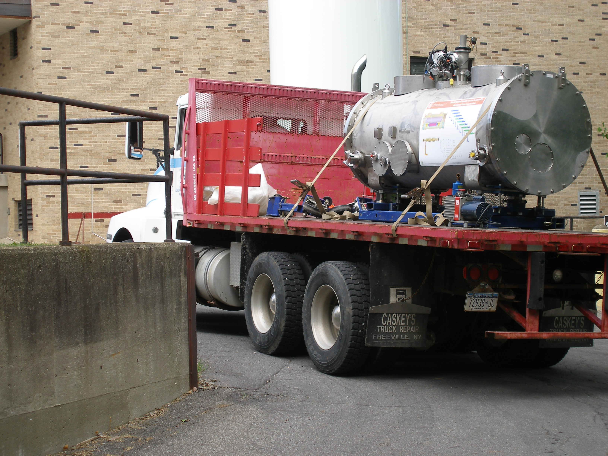

Understanding the Effects of Ambient Magnetic Field
on Cavity Performance
Cool Down Dynamics and Surface Resistance
Five single-cell cavities constructed at Cornell and used for magnetic field
studies.
Me preparing a nitrogen-doped cavity for mangetic field measurements.
Trapped Magnetic Flux

Me assembling a nitrogen-doped cavity in the Cornell clean room.
Me putting the final touches on a nitrogen-doped cavity before pulse testing with our 2 MW klystron.
Comparison with Theory
Q0 results of the first pass for all five single-cell cavities doped with nitrogen
Results of pulsed testing on a nitrogen-doped cavity, showing that quench was centered at a defect.
Related Publications
Nitrogen-Doped 9-cell Cavity Performance in a Test Cryomodule for LCLS-II
D. Gonnella, R. Eichhorn, F. Furuta, M. Ge, D. Hall, V. Ho,
G. Hoffstaetter, M. Liepe, T. O'Connell, S. Posen, P. Quigley, J. Sears, V. Vescherevich, A. Grassellino,
A. Romanenko, and. D.A. Sergatskov
Peer-Reviewed Journal Articles J. Appl. Phys., 117:023908 (2015)
Mean Free Path Dependence of Losses from Trapped Magnetic Flux


{kind=link}
{kind=link}